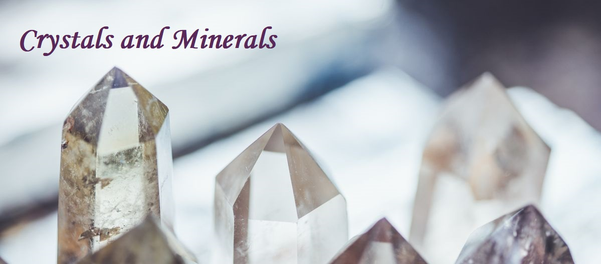

Заредете живота си със силата и мъдростта на всемогъщата вселена. Купете скъпоценни и полускъпоценни камъни, минерали и други дарове на земните стихии на най-изгодни цени. Голямото разнообразие, което предлагаме, ще покрие индивидуалните ви нужди. Минералите в своите многобройни цветове, форми и енергийни свойства ще ви донесат просперитет, здраве, красота, любов и баланс.
Login
Register

Начало
Кристали
Минерали
Магазин
Астрология
Блог
Контакти
Зодиакални знаци
Разбри коя зодия си,според месеца и деня на раждането си..
Изберете месец и ден и натиснете бутона
месец:
Януари
Февруари
Март
Април
Май
Юни
Юли
Август
Септември
Октомври
Ноември
Декември
ден:
1
2
3
4
5
6
7
8
9
10
11
12
13
14
15
16
17
18
19
20
21
22
23
24
25
26
27
28
29
30
31